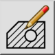
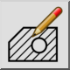
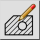
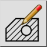

Éditer hachure
Barre d'outil / icône :
 

Menu : Modifier > Éditer hachure
Raccourci : M, H
Commandes : edithatch | modifyhatch | mh
Ceci est une traduction automatique.
Barre d'outil / icône :
 

Menu : Modifier > Éditer hachure
Raccourci : M, H
Commandes : edithatch | modifyhatch | mh
Cet outil peut être utilisé pour éditer les entités de hachures existantes.
Notez qu'au lieu d'utiliser cet outil, vous pouvez aussi double-cliquer sur l'entité de hachure que vous voulez éditer.